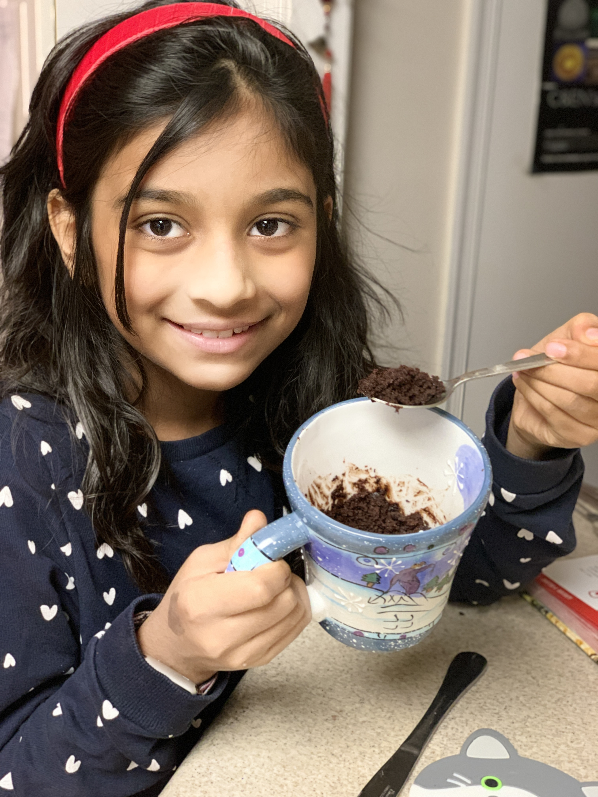
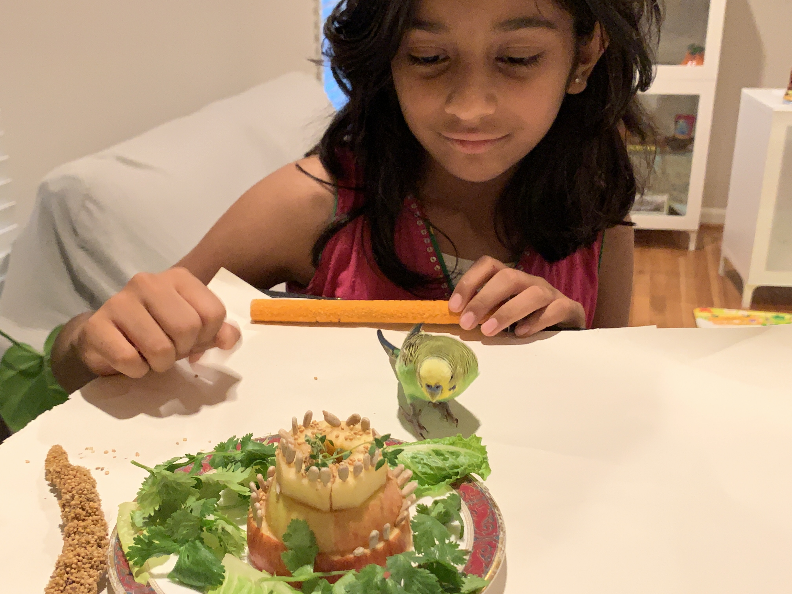
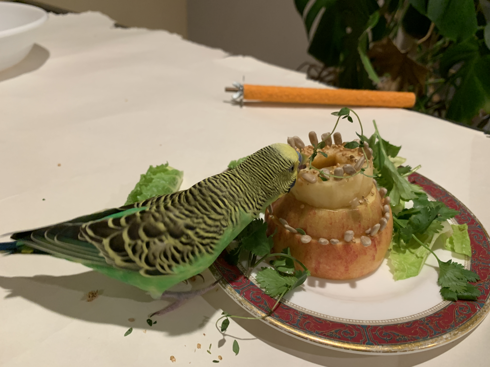

Table of contents
Chocolate mug cakes
Mmm! Sweet! These mug cakes are great to make on a cold winter day. They really soft, and it tastes better when you eat it warm. It's super easy!
- Time:30 min
- Serving Size: 2 mug
Ingredients
- 1/4 cup all-pourpose flour
- 1/2 teaspoon baking powder
- 4 tablespoons unsalted butter cut in 4 peices
- 3 tablespoons of semisweet or bittersweet chocolate chips
- 1 large egg
- 1/4 cup sugar
- 2 tablespoons cocoa powder
- 1 teaspoon of vanilla extract
- 1/8 teaspoon salt
Equipment
- 1 small and 1 medium microwave safe bowls
- whisk
- 2 microwave safe coffee mugs
- oven mitts
Start making! (steps)
- In a small bowl, mix flour and baking powder together.
- In the medium bowl, combine butter and chocolate chips. Heat the microwave at 100 percent powr for 1 minute. Stop microwave and stir the chocolate mixture mixture with spoon. Then put it in the microwave for 100 percent power for 1 minute. Remove the bowl from microwave.
- Add the egg, sugar, cocoa, vinilla extract, and salt to chocolate mixture and whisk until smooth
- Add flour mixture and whisk until smooth. Use a spoon to divide evenly between two mugs.
- Place the mugs of the microwave turnable plate. Cook in microwave at 100 percent power for 30 seconds, take the mugs out and stir it for a bit. Then repeat the step again, but don't stir it after.
- take out the mugs and let cool. Now for the best part!! Taste test!! Mmm!!
Thanks for cooking with me!!
Parakeet birthday cake
Twwet! Happy Birdday parakeet!! This parakeet cake is a heathly and delicous birdday treat for your parakeet!! If your bird does not into veggies, I will give you some tips along the way.
Ingredients
- 3 Apples
- Spray millet
- Your pet bird seeds
- Thyme
- Cilantro
- lettce (optinal)
Equipment
- cutting knife (with parent supervision)
- A tiny plate
- 3 different sized cookie cutters (optinal)
- Your bird!!!
- Your hands!!
Start Making!!
- First wash the appels, thenl ay them on their sides. Remove the seeds by cutting a square around the seeds and pooping it out. And then cut them with cookie cutters, and make sure that the cutters are different sizes. Big, medium, and small. If you don't have cookie cutters, you can use a knife, I used a knife. It is easiest if you cut the appels a circle shape. Then stack the appels on top of each other, first big, then midium, and then small.
- Next take a handfull of sunflower seeds, and stick them with the pointy part in the appels of the rim that is shown. If you do not understand you can go check the finished picture of it on the end of this recipe.
- In the squares you cut to remove the seeds, you can put spray millet in the gap. A birds favorite treat! Tip: if your bird does not like apple, you can sprinkle some spray millet on the cake.
- Then Leave a little bit of space is the square hole for a strand of thyme. My bird's favorite leafy green! Put the hyme in the hole, and stick it there.
- Lastly, you put your cake on the plate, and put some fresh cilantro around the cake and you can put some lettuce if you want to.
And then, let your bird enjoy!! Thanks for making it with me!!
 Homemade Hummingbird nectar
Buzzzzzzzzzz. This sweet nectar will make all the hummingbird come to you!! It's super easy and ypu only need a couple things. When you're done you will see the beauty of the hummingbird!
Ingredients
- 4 cups filtered water
- 1 cup cane sugar
Equipment
- Measuring Cups
- Stove
- Stirring stick
- Stove pot
- Hummingbird feeder
Start Making!!
- First boil the water on the stove top
- Add the sugar and stir it until the sugar dissolves
- Once the sugar is dissolved, turn off the stove and keep aside the pot and let it cool to room temperature
- When the syrup is cooled, put 1/3 rd of the syrup in the hummingbird feeder, and store the remaining syrup in the fridge and use all of the syrup within a week so it does not go bad.
- Lastly, change the syrup every other day and clean the feeder thoroughly to avoid harmful growth.
And now you wait for the hummingbirds to come! It's a wonderful sight! Thanks for cooking with me!!